Power BI Connector for Odoo
Easily connect your Odoo data to Power BI and unlock advanced data visualization and reporting capabilities.
Our Power BI Connector module enables seamless integration between Odoo and Microsoft Power BI, helping businesses transform their raw data into actionable insights. With easy token-based access, selective field exposure, and full API auditing, this module ensures secure, customizable, and efficient reporting.
Community
Enterprise
Odoo.sh
Key Features of Power BI Connector for Odoo
Direct Odoo to Power BI Integration
Export your Odoo data models directly into Power BI using built-in connector endpoints. Connect tables from sales, CRM, inventory, accounting, HR, and more – without manual CSV exports or third-party middleware.

Secure REST API Connectivity
Our module uses Odoo's native security and authentication systems with token-based REST API architecture, ensuring safe and encrypted data transmission between Odoo and Power BI.

Customizable Data Models
Choose the exact Odoo models (and fields) you want to analyze in Power BI. Whether it's revenue by region, inventory trends, or employee performance, you stay in control of your metrics.

No External Tools Required
Unlike other connectors, our app is built to work independently within Odoo and Power BI. No need for additional ETL tools, middleware, or server configurations.

Role-Based Access Control
Maintain strict control over what data is exposed to Power BI. Define access levels based on user roles or departments to prevent unauthorized exposure of sensitive business data.

Easy API Token Management
Generate, manage, and revoke API tokens for different users or services through the user-friendly Odoo backend.
Developer Friendly
Our module is fully extensible for developers. Need to add custom fields, or connect to custom models? It's easily done through standard Odoo development practices.

Multi-Company Support
Built to handle Odoo's multi-company environments. Fetch and analyze data specific to one or multiple companies based on your access rights.
--- HOW IT WORKS ---
Power BI Menu Integration
A dedicated Power BI menu added to your Odoo interface for easy access and configuration.
API Tokens:
Generate secure API tokens per user for connecting Power BI to Odoo.
Control access with active/inactive token status
Token-based access ensures data protection and user-level control.
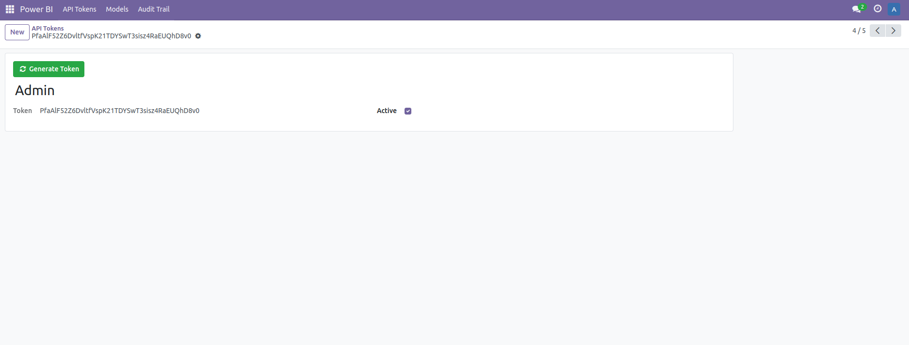
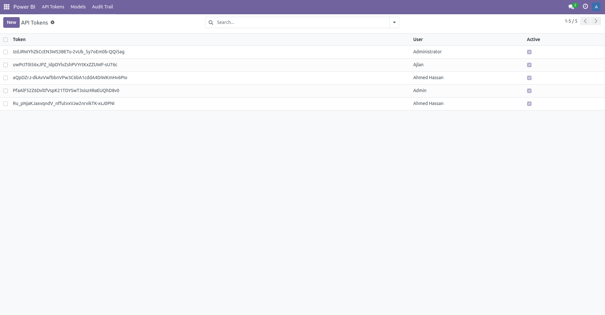
Power BI Models
Choose specific models (Odoo objects) to expose for Power BI reporting.
Flexibility to select only required models, avoiding unnecessary data load.
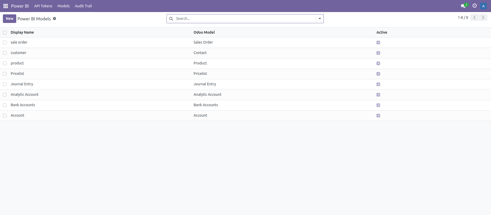
Field Selection
Select specific fields to be shown in Power BI from the chosen models.
Customize the dataset based on your reporting requirements.
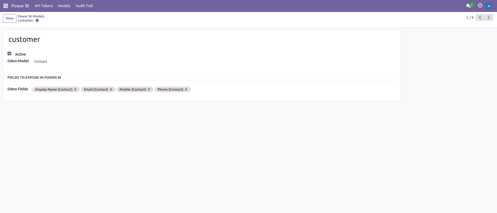
API Audit Trail
Monitor all API calls with detailed logs.
Logs include:
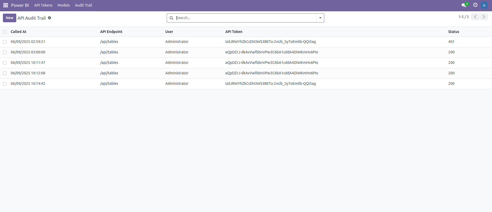
Odoo – Power BI Connector
Easily connect your Odoo data with Power BI for real-time reporting and dynamic visualizations.
Install the Power BI Integrator Module from Infintor & install Custom Connector
Power BI Functional Flow:
Navigation: Power BI – Get Data
Open Power BI Desktop
Go to Home > Get Data > Odoo
Odoo Enhancement Connector Wizard:
In Odoo, click on Odoo Enhanced (custom) and enter the details
Enter the following details:
IP Address
API Token
Click the OK button to activate the connection
Note: Connector Delivery: Once the module is purchased, we will send you the Power BI Connector file compatible with Windows systems.
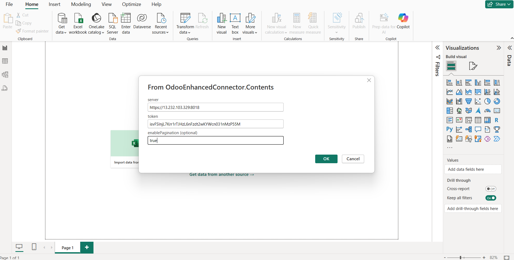
Model Navigation in Power BI
In Power BI, under the Navigator, you will see all models selected in Odoo
Choose your desired model
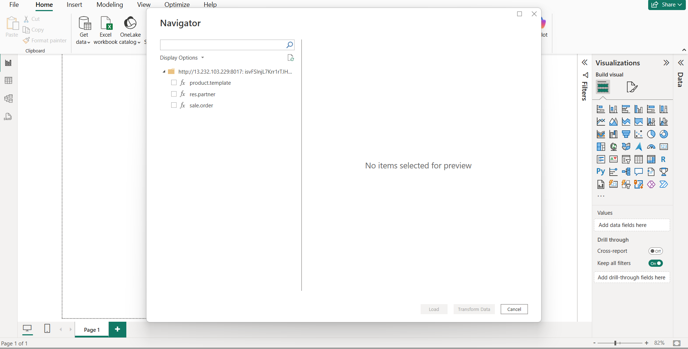
Power BI will show a preview of the table, including the selected Odoo fields.
Sample Graphs & Visuals
Below is a example screenshot to showcase how your data can be visualized once connected and configured.
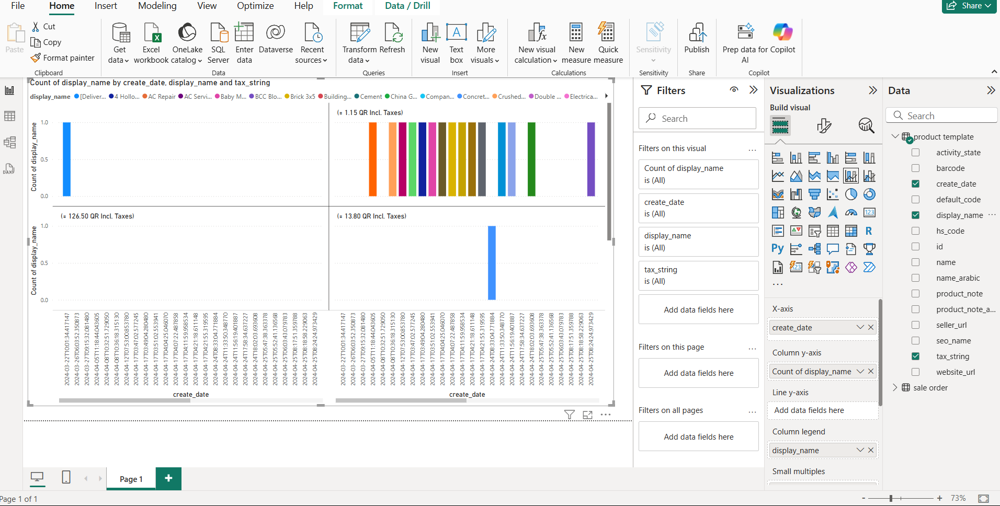
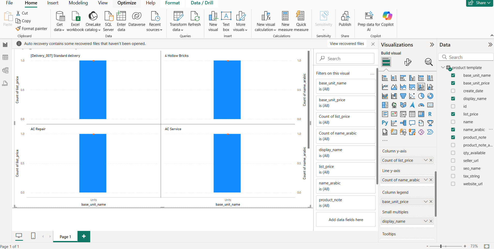
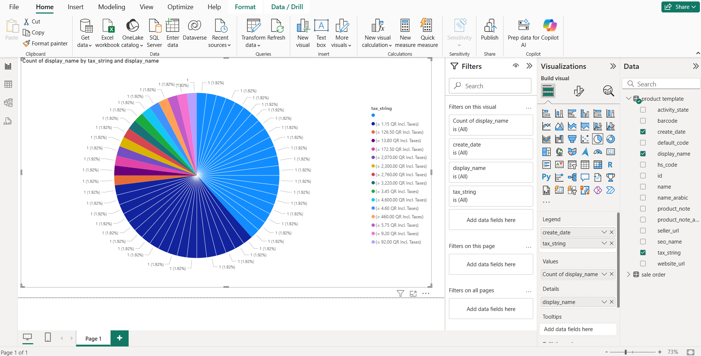
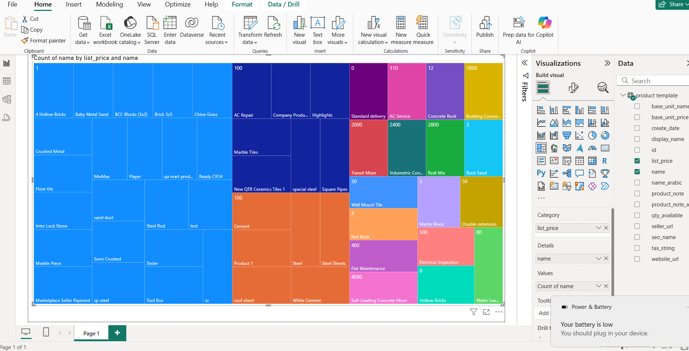
Our Services
Odoo Implementation
End-to-end Odoo implementation to meet your business needs.
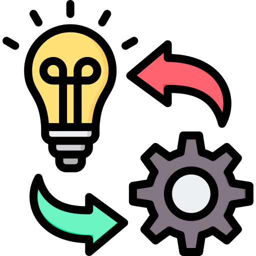
Odoo Customization
Custom solutions tailored to your unique requirements.

Odoo Support & Training
Comprehensive support and training to enhance your Odoo usage.

Hire an Odoo Developer
Get access to skilled Odoo developers for your project needs.
Odoo Integration
Integrate Odoo seamlessly with third-party apps and systems.
Odoo Hosting & Cloud
Secure and scalable Odoo hosting solutions.
Odoo Maintenance
Ensure smooth and uninterrupted operations.
Odoo Consulting
Expert consulting to help you leverage Odoo for maximum efficiency.